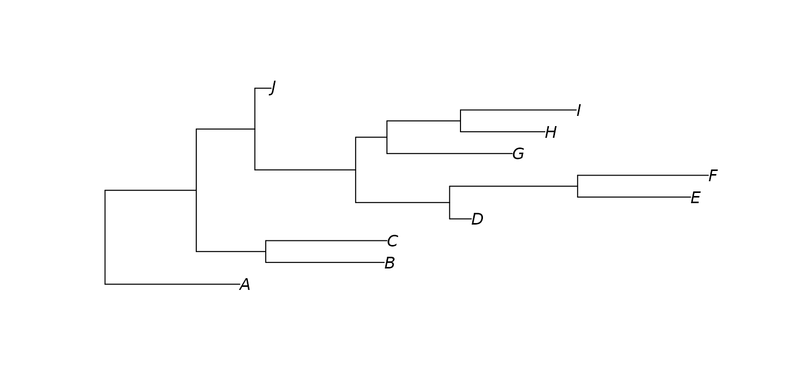

A phylogenetic tree is required for computing UniFrac distance matrices. You can load a tree from a file or by providing the tree string directly. This tree must be in Newick format, also known as parenthetic format and New Hampshire format.
See also
Other phylogeny:
tree_subset()
Examples
library(rbiom)
infile <- system.file("extdata", "newick.tre", package = "rbiom")
tree <- read_tree(infile)
print(tree)
#>
#> Phylogenetic tree with 20 tips and 19 internal nodes.
#>
#> Tip labels:
#> Pa5Bac29, AtlPorci, AciSp313, MxlBact8, MxlBacte, PseS1107, ...
#>
#> Rooted; includes branch length(s).
tree <- read_tree("
(A:0.99,((B:0.87,C:0.89):0.51,(((D:0.16,(E:0.83,F:0.96)
:0.94):0.69,(G:0.92,(H:0.62,I:0.85):0.54):0.23):0.74,J:0.1
2):0.43):0.67);")
plot(tree)
